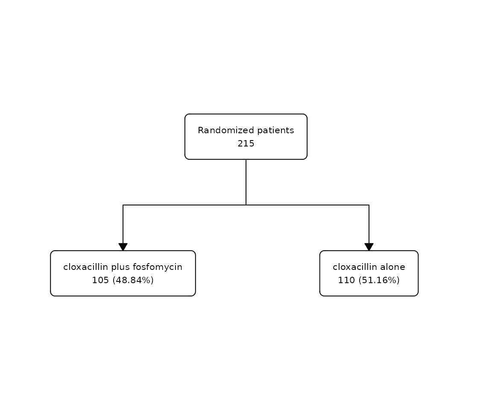
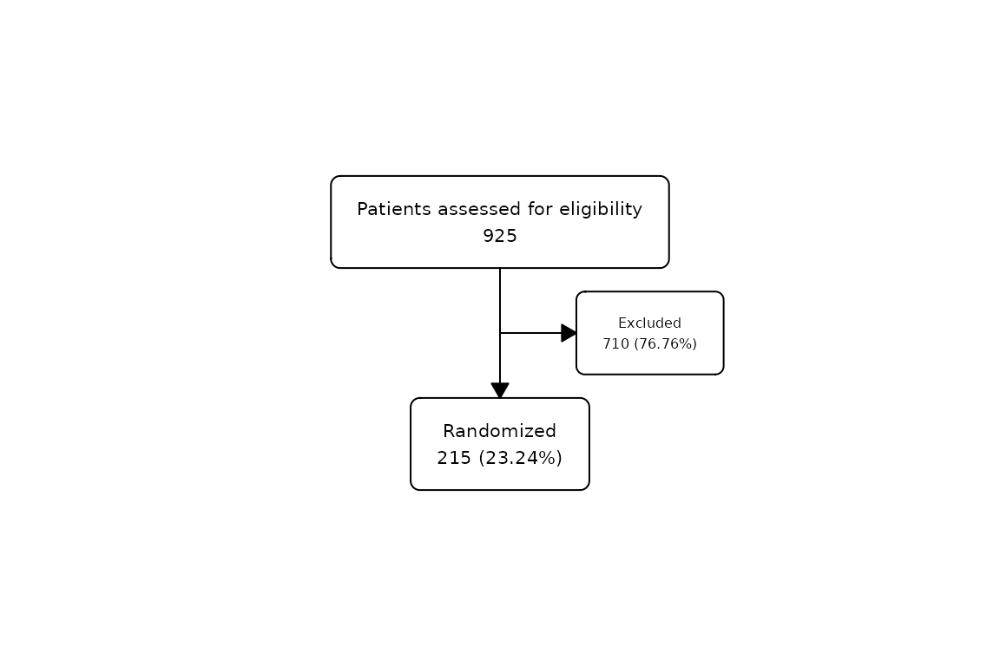
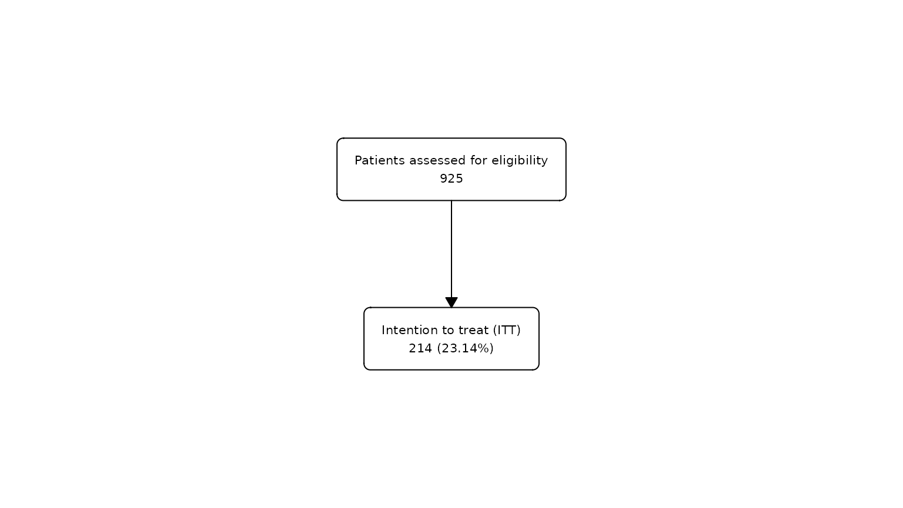

Overview
flowchart is a package for drawing participant flow
diagrams directly from a dataframe using tidyverse. It provides a set of
functions that can be combined with |> to create all
kinds of flowcharts from a dataframe in an easy way:
as_fc()transforms a dataframe into afcobject that can be manipulated by the package.fc_split()splits a flowchart according to the different values of a column in the dataframe.fc_filter()creates a filtered box from the flowchart, based on the evaluation of an expression in the dataframe.fc_merge()combines horizontally two different flowcharts.fc_stack()combines vertically two different flowcharts.fc_modify()allows to modify the parameters of the flowchart which are stored in.$fc.fc_draw()draws the flowchart created by the previous functions.fc_export()allows to export the flowchart drawn to the desired format.
Installation
install.packages("flowchart")Example dataset
We will use the built-in datasets in the
package:clinic_patient and clinic_visit. These
datasets belong to the same simulated clinical trial, one containing the
information per patient and the other per visit. This study simulates a
clinical trial in which subjects have been randomised into a control and
treatment group after meeting some inclusion criteria: over 18 years of
age and signed informed consent. These subjects are then followed for
two visits and observations are collected on a biomarker.
## tibble [230 × 6] (S3: tbl_df/tbl/data.frame)
## $ id : int [1:230] 1 2 3 4 5 6 7 8 9 10 ...
## $ age : int [1:230] 63 84 80 36 19 52 27 68 86 76 ...
## $ consent : Factor w/ 2 levels "No","Yes": 2 2 2 2 2 2 2 2 2 2 ...
## $ group : Factor w/ 2 levels "Control","Treatment": 2 1 2 2 1 1 2 2 2 1 ...
## $ n_visits : num [1:230] 1 2 2 2 2 2 2 1 2 2 ...
## $ marker_alt: Factor w/ 2 levels "Marker not altered (<5)",..: 1 1 1 1 1 1 1 1 1 1 ...
# Per visit dataset
str(clinic_visit)## tibble [411 × 6] (S3: tbl_df/tbl/data.frame)
## $ id : int [1:411] 1 2 2 3 3 4 4 5 5 6 ...
## $ age : int [1:411] 63 84 84 80 80 36 36 19 19 52 ...
## $ consent: Factor w/ 2 levels "No","Yes": 2 2 2 2 2 2 2 2 2 2 ...
## $ group : Factor w/ 2 levels "Control","Treatment": 2 1 1 2 2 2 2 1 1 1 ...
## $ visit : num [1:411] 1 1 2 1 2 1 2 1 2 1 ...
## $ marker : num [1:411] 0.316 1.989 1.511 0.708 1.903 ...Basic operations
The first step is to initialise the flowchart with
as_fc. The last step, if we want to visualise the created
flowchart, is to draw the flowchart with fc_draw. In
between we can combine the functions fc_split.,
fc_filter, fc_merge, fc_stack
with the operator pipe (|>) to create complex flowchart
structures.
Initialize
## [1] "fc"
str(fc)## List of 2
## $ data: tibble [230 × 6] (S3: tbl_df/tbl/data.frame)
## ..$ id : int [1:230] 1 2 3 4 5 6 7 8 9 10 ...
## ..$ age : int [1:230] 63 84 80 36 19 52 27 68 86 76 ...
## ..$ consent : Factor w/ 2 levels "No","Yes": 2 2 2 2 2 2 2 2 2 2 ...
## ..$ group : Factor w/ 2 levels "Control","Treatment": 2 1 2 2 1 1 2 2 2 1 ...
## ..$ n_visits : num [1:230] 1 2 2 2 2 2 2 1 2 2 ...
## ..$ marker_alt: Factor w/ 2 levels "Marker not altered (<5)",..: 1 1 1 1 1 1 1 1 1 1 ...
## $ fc : tibble [1 × 14] (S3: tbl_df/tbl/data.frame)
## ..$ id : num 1
## ..$ x : num 0.5
## ..$ y : num 0.5
## ..$ n : int 230
## ..$ N : int 230
## ..$ perc : chr "100"
## ..$ text : chr "Initial dataframe\n230"
## ..$ type : chr "init"
## ..$ group : logi NA
## ..$ just : chr "center"
## ..$ text_color : chr "black"
## ..$ text_fs : num 8
## ..$ bg_fill : chr "white"
## ..$ border_color: chr "black"
## - attr(*, "class")= chr "fc"The fc object created is a list containing the tibble of
the dataframe associated with the flowchart and the tibble that stores
the flowchart parameters.
Alternatively, if a dataframe is not available, we can initialize a
flowchart using the N = argument manually specifying the
number of rows:
fc2 <- as_fc(N = 230)Draw
fc |>
fc_draw()Filter
We can filter the flowchart using fc_filter() specifying
the logic in which the filter is to be applied. For example, we want to
show the number of patients included in the study, that is, those over
the age of 18 who have signed an informed consent.
clinic_patient |>
as_fc(label = "Patients included") |>
fc_filter(age >= 18 & consent == "Yes", label = "Patients included", show_exc = TRUE) |>
fc_draw()
See ‘Modify function arguments’ for more information on the
label= and show_exc= arguments.
Alternatively, if the column to filter is not available, we can use
the N = argument to manually specify the number of rows of
the resulting filter:
clinic_patient |>
as_fc(label = "Patients included") |>
fc_filter(N = 200, label = "Patients included", show_exc = TRUE) |>
fc_draw()
Split
We can split the flowchart into groups using fc_split()
specifying the grouping variable. The function will split the flowchart
into as many categories as the specified variable has:
clinic_patient |>
filter(!is.na(group)) |>
as_fc(label = "Patients included") |>
fc_split(group) |>
fc_draw()
Alternatively, if the column to split is not available, we can use
the N = argument to manually specify the number of rows in
each group of the resulting split:
clinic_patient |>
filter(!is.na(group)) |>
as_fc(label = "Patients included") |>
fc_split(N = c(100, 100), label = c("Control", "Treatment")) |>
fc_draw()
Combine
fc_merge() and fc_stack() allow you to
combine different flowcharts horizontally or vertically. This is very
useful when you need to combine flowcharts generated from different
dataframes, as shown here.
Merge
We can combine different flowcharts horizontally using
fc_merge(). For example, we might want to represent the
flow of patients included in the study next to the flow of their
corresponding visits:
# Create first flowchart for patients
fc1 <- clinic_patient |>
filter(!is.na(group)) |>
as_fc(label = "Patients included") |>
fc_split(group)
# Create second flowchart for visits
fc2 <- clinic_visit |>
filter(!is.na(group)) |>
as_fc(label = "Number of visits") |>
fc_split(group)
list(fc1, fc2) |>
fc_merge() |>
fc_draw()
Stack
We can combine different flowcharts vertically using
fc_stack(). For example, we might want to combine in one
flowchart the flow of patients included in the study and the flow of
their corresponding visits, which come from different dataframes:
# Create first flowchart for patients
fc1 <- clinic_patient |>
filter(!is.na(group)) |>
as_fc(label = "Patients included") |>
fc_split(group)
# Create second flowchart for visits
fc2 <- clinic_visit |>
filter(!is.na(group)) |>
as_fc(hide = TRUE) |>
fc_split(group, label = c("Number of visits (Control)", "Number of visits (Treatment)"), text_pattern = "{label}\n {n}")
list(fc1, fc2) |>
fc_stack() |>
fc_draw()
See ‘Modify function arguments’ for more information on the
hide= and text_pattern= arguments.
Customize output
We can customize the flowchart either with the arguments provided by
each function in the process of creating it, or directly in the final
output using the function modify_fc.
Modify function arguments
Arguments common to as_fc(), fc_filter()
and fc_split(), to customise the appearance of the boxes
created at each step:
| Argument | Description |
|---|---|
label=
|
modify the label. |
text_pattern=
|
modify the pattern of the text. |
text_color=
|
modify the color of the text. |
text_fs=
|
modify the font size of the text. |
bg_fill=
|
modify the background color of the box. |
border_color=
|
modify the border color of the box. |
as_fc() arguments:
| Argument | Description |
|---|---|
hide=
|
hide the first initial box created by this function. |
fc_filter() arguments:
| Argument | Description |
|---|---|
sel_group=
|
apply the filter only in the specified groups (if data is grouped). |
round_digits=
|
modify the number of digits to round percentages. |
show_exc=
|
show the box with the excluded rows that do not match the filter. |
direction_exc=
|
change the direction of the exclusion box (left or right). |
label_exc=
|
modify the label of the exclusion box. |
text_pattern_exc=
|
modify the pattern of the exclusion box. |
text_color_exc=
|
modify the color of the text in the exclusion box. |
text_fs_exc=
|
modify the font size of the text in the exclusion box. |
bg_fill_exc=
|
modify the background color of the exclusion box. |
border_color_exc=
|
modify the border color of the exclusion box. |
fc_split() arguments:
| Argument | Description |
|---|---|
sel_group=
|
split the flowchart only in the specified groups (if data is grouped). |
na.rm=
|
omit the missing values in the grouping variable. |
round_digits=
|
modify the number of digits to round percentages. |
show_zero=
|
omit the levels of the grouping variable that don’t have an event. |
fc_draw() arguments are heredited from
arrow:
| Argument | Description |
|---|---|
arrow_angle=
|
angle of the arrow head in degrees. |
arrow_length=
|
unit specifying the length of the arrow head. |
arrow_ends=
|
specify the ends of the line to draw the arrow head (last/first/both). |
arrow_type=
|
whether the arrow head should be a closed triangle. |
Function to customize the flowchart
The function modify_fc allows the user to customise the
created flowchart by modifying its parameters, which are stored in
.$fc.
For example, we could fully customise the text in the exclusion box if we wanted to specify the different reasons for exclusion:
fc <- clinic_patient |>
as_fc(label = "Patients included") |>
fc_filter(age >= 18 & consent == "Yes", label = "Patients included", show_exc = TRUE) |>
fc_modify(~.x |>
mutate(
text = case_when(
id == 3 ~ str_glue("Excluded patients:
- {sum(clinic_patient$age < 18)} under-age
- {sum(clinic_patient$consent == 'No')} without a signed consent
"),
TRUE ~ text
)
))
fc |>
fc_draw()
We could also use fc_modify() to change the default
x and y coordinates:
Export
Once the flowchart has been drawn we can export it to the most
popular image formats (png, jpeg, tiff) using
fc_export():
Examples
Example 1
clinic_patient |>
as_fc(label = "Available patients") |>
fc_filter(age >= 18 & consent == "Yes", label = "Patients included", show_exc = TRUE) |>
fc_split(group) |>
fc_filter(n_visits == 2, label = "Two visits available", show_exc = TRUE) |>
fc_split(marker_alt, label = c("Marker not altered", "Marker altered")) |>
fc_draw()
Example 2
For this example, we will use another built-in dataset called
safo, which is a randomly generated dataset from the SAFO
trial. SAFO is an open-label, multicentre, phase III–IV superiority
randomised clinical trial designed to assess whether cloxacillin plus
fosfomycin administered during the first 7 days of therapy achieves
better treatment outcomes than cloxacillin alone in hospitalised
patients with meticillin-sensitive Staphylococcus aureus bacteraemia. In
this example, we reproduce the original flowchart of the trial published
in Nature Medicine1.
First, we need to do some pre-processing to reproduce the text in the larger boxes:
# Create labels for exclusion box:
data(safo)
label_exc <- paste(
c(str_glue("{sum(safo$inclusion_crit == 1 | safo$exclusion_crit == 1 | safo$decline_part == 1, na.rm = T)} excluded:"),
map_chr(c("inclusion_crit", "decline_part", "exclusion_crit"), ~str_glue("{sum(safo[[.x]] == 1, na.rm = TRUE)} {attr(safo[[.x]], 'label')}")),
map_chr(4:15, ~str_glue(" - {sum(safo[[.x]] == 1)} {attr(safo[[.x]], 'label')}"))),
collapse = "\n")
label_exc <- gsub("exclusion criteria", "exclusion criteria:", label_exc)
safo1 <- safo |>
filter(group == "cloxacillin alone", !is.na(reason_pp)) |>
mutate(reason_pp = droplevels(reason_pp))
label_exc1 <- paste(
c(str_glue("{nrow(safo1)} excluded:"),
map_chr(levels(safo1$reason_pp), ~str_glue(" - {sum(safo1$reason_pp == .x)} {.x}"))),
collapse = "\n")
label_exc1 <- str_replace_all(label_exc1, c("resistant" = "resistant\n", "blood" = "blood\n"))
safo2 <- safo |>
filter(group == "cloxacillin plus fosfomycin", !is.na(reason_pp)) |>
mutate(reason_pp = droplevels(reason_pp))
label_exc2 <- paste(
c(str_glue("{nrow(safo2)} excluded:"),
map_chr(levels(safo2$reason_pp), ~str_glue(" - {sum(safo2$reason_pp == .x)} {.x}"))),
collapse = "\n")
label_exc2 <- str_replace_all(label_exc2, c("nosocomial" = "nosocomial\n", "treatment" = "treatment\n"))Second, let’s create and customise the flowchart using the functions in the package:
safo |>
as_fc(label = "patients assessed for eligibility", text_pattern = "{n} {label}") |>
fc_filter(!is.na(group), label = "randomized", text_pattern = "{n} {label}", show_exc = TRUE,
just_exc = "left", text_pattern_exc = "{label}", label_exc = label_exc, text_fs_exc = 7) |>
fc_split(group, text_pattern = "{n} {label}") |>
fc_filter(itt == 1, label = "included in intention-to-treat\n population", show_exc = TRUE,
text_pattern = "{n} {label}",
label_exc = "patient did not receive allocated\n treatment (withdrew consent)",
text_pattern_exc = "{n} {label}", text_fs_exc = 7) |>
fc_filter(pp == 1, label = "included in per-protocol\n population", show_exc = TRUE,
just_exc = "left", text_pattern = "{n} {label}", text_fs_exc = 7) |>
fc_modify(
~.x |>
filter(id != 9) |>
mutate(
text = case_when(id == 11 ~ label_exc1, id == 13 ~ label_exc2, TRUE ~ text),
x = case_when(id == 3 ~ x + 0.15, id %in% c(11, 13) ~ x + 0.01, TRUE ~ x),
y = case_when(id %in% c(1, 3) ~ y + 0.05, id >= 2 ~ y - 0.05, TRUE ~ y)
)
) |>
fc_draw()
Example 3
In this example, we will create a flowchart without any dataframe,
using the N = argument to manually specify the numbers to
display in the boxes:
as_fc(N = 300) |>
fc_filter(N = 240, label = "Randomized patients", show_exc = TRUE) |>
fc_split(N = c(100, 80, 60), label = c("Group A", "Group B", "Group C")) |>
fc_filter(N = c(80, 75, 50), label = "Finished the study") |>
fc_draw()